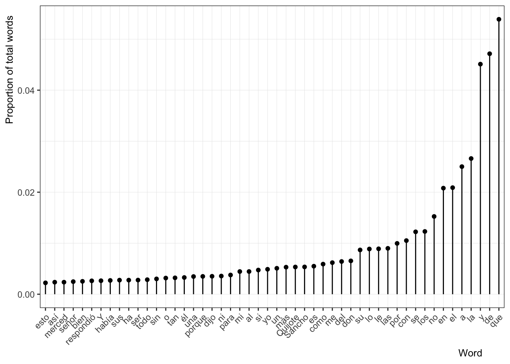
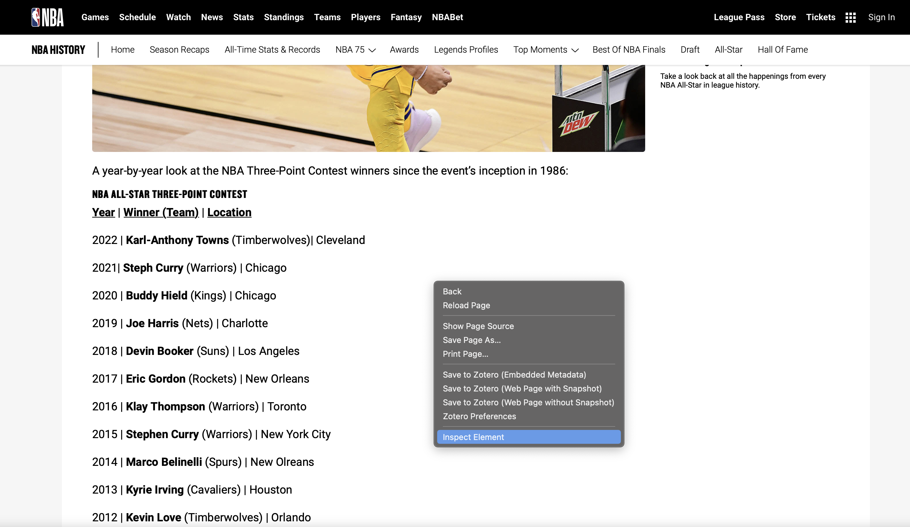
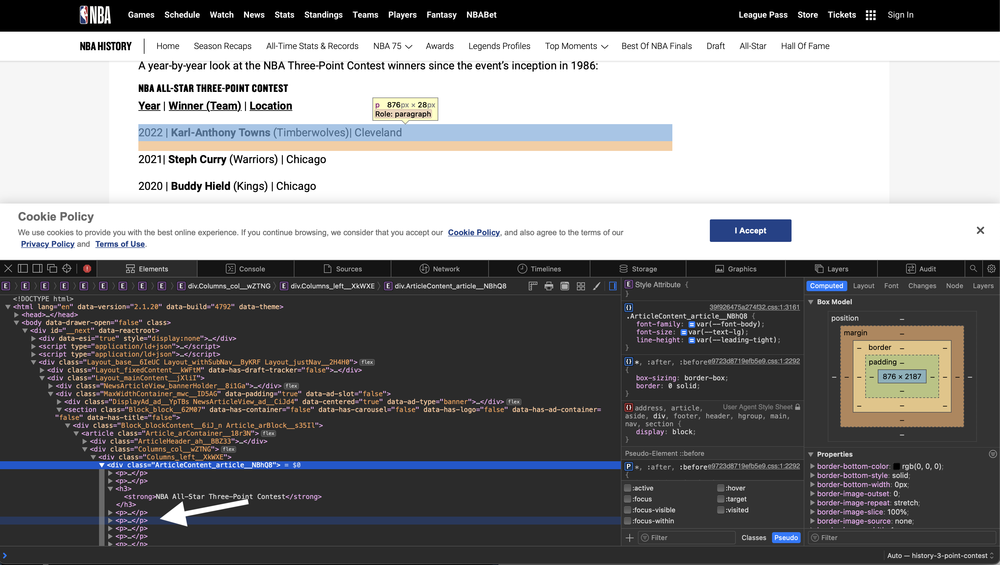
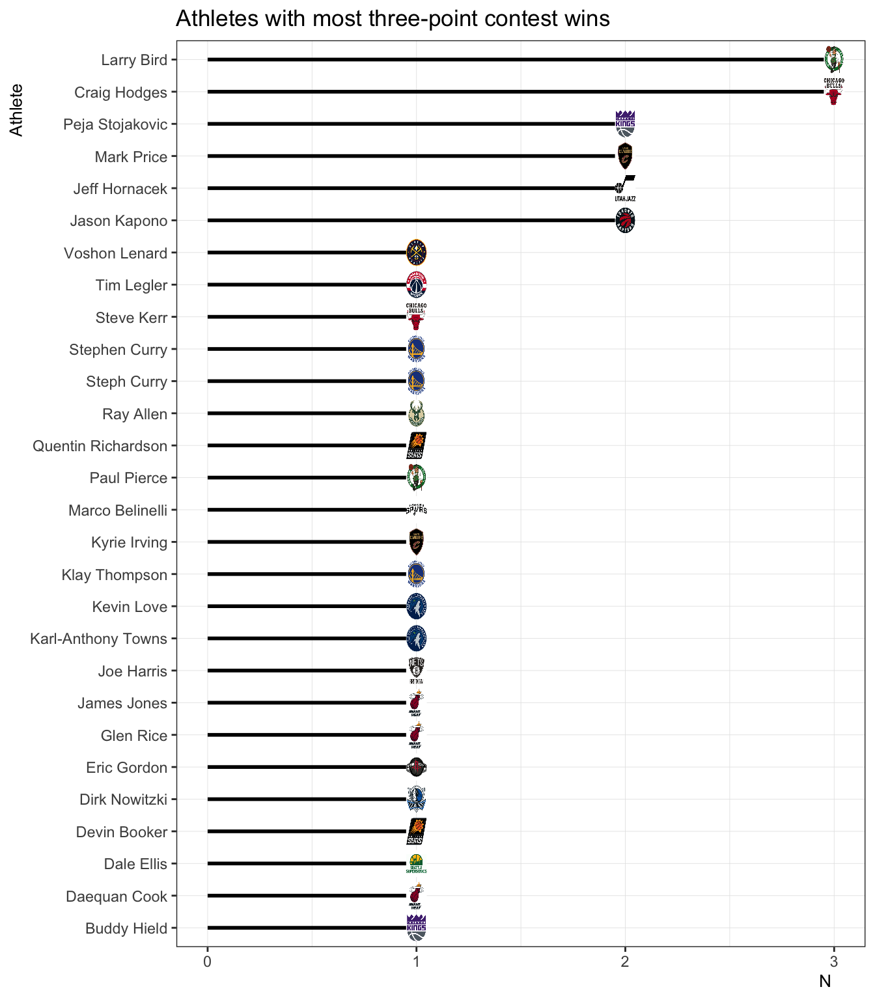
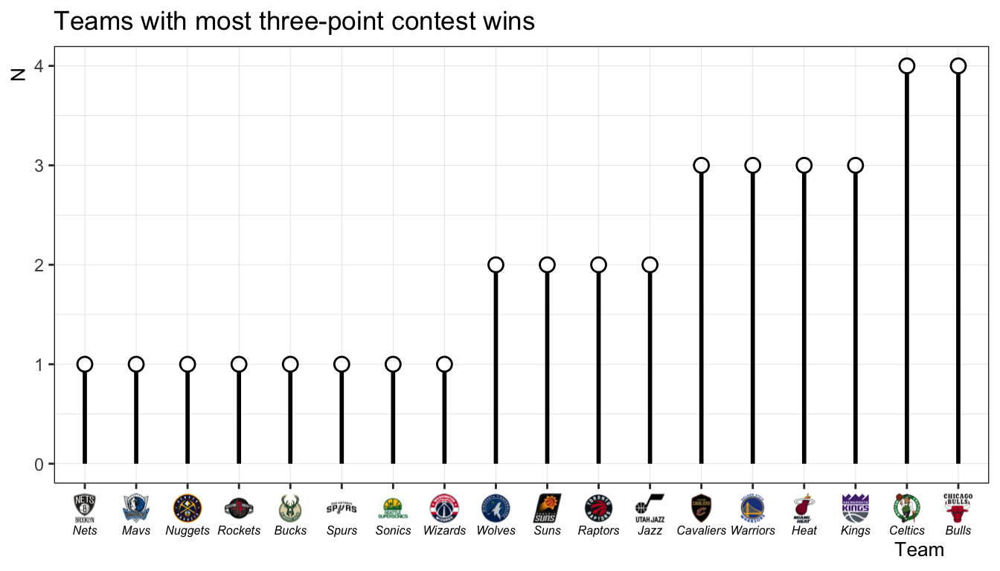
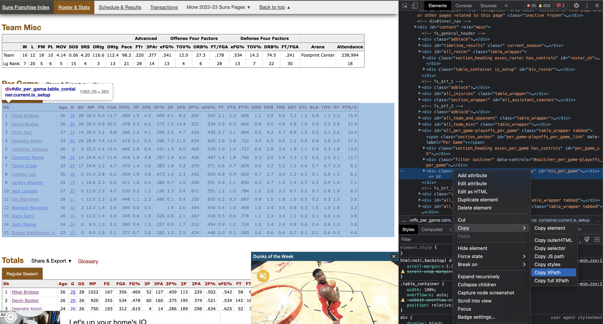
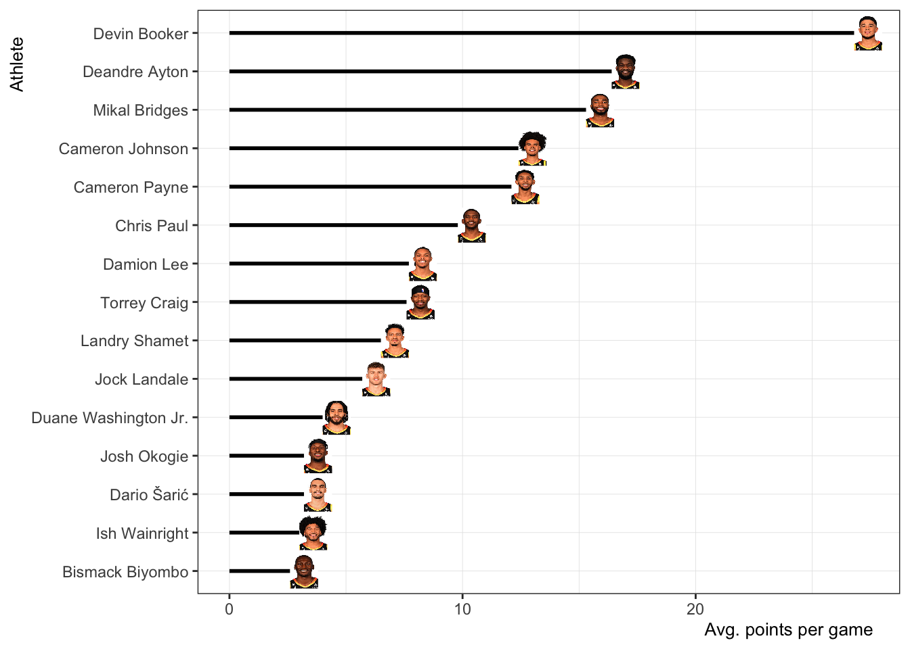
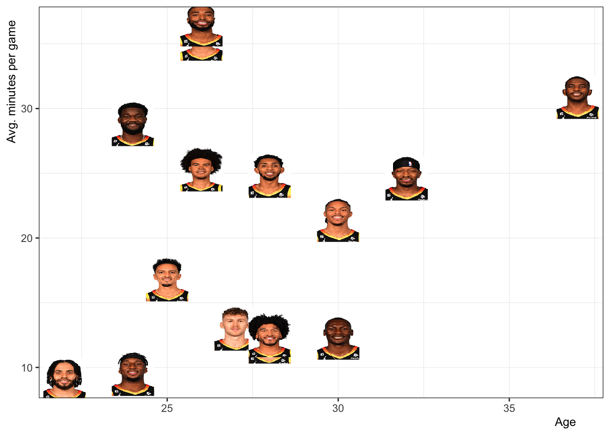

# Load packages
library("rvest")
library("tidyr")
library("dplyr")
library("stringr")
library("forcats")
library("ggplot2")
library("kableExtra")
library("janitor")
library("ggimage")
# Set cleaner plotting theme
theme_set(theme_bw())
theme_update(
axis.title.y = element_text(size = rel(.9), hjust = 0.95),
axis.title.x = element_text(size = rel(.9), hjust = 0.95),
panel.grid.major = element_line(colour = 'grey90', linewidth = 0.15),
panel.grid.minor = element_line(colour = 'grey90', linewidth = 0.15)
)Webscraping 101
Overview
In this brief tutorial I will walk through the basics of getting information from the internet (webscraping) and into R. Let’s start by loading the packages we’ll need:
The important one of the group is rvest. This package provides several functions we’ll use to obtain html and parse it to text. Then we can do whatever we want with it, like put it in a dataframe.
Getting text from a website
Don Quijote
So, now we need to find something from the internet that we want to get into R. Let’s start with some text. Why not Don Quijote? It turns out the first and second parts are available online here: https://www.gutenberg.org/files/2000/2000-h/2000-h.htm.
You can find Don Quijote online at many different websites, but I like this one because you can get the entire thing in a single page.
Perhaps we have questions like how many words are in the novel? or what words are most common? This is how we could go about answering these questions.
url_quijote <- "https://www.gutenberg.org/files/2000/2000-h/2000-h.htm"
quijote <- url_quijote %>%
read_html()
quijote{html_document}
<html xmlns="http://www.w3.org/1999/xhtml" xml:lang="es" lang="es">
[1] <head>\n<meta http-equiv="Content-Type" content="text/html;charset=utf-8" ...
[2] <body>\r\n\r\n<div style="text-align:center; font-size:1.2em; font-weight ...
First, we assign the url to an object (url_quijote). Next, we pipe the url into the function read_html, the output of which is assigned to the object quijote. We’ll build on this pipe sequence using the quijote object, but we will do it step by step so that it makes sense.
Notice that the output returned has two lines containing the head and the body of the document. If you have experience with html, this will make perfect sense. If not, don’t worry too much about that. The important thing to know is that we want what’s in the body portion of the document.
Now we will pipe the quijote object into the html_elements function. This is the real workhorse (imo) of rvest
quijote %>%
html_elements("p") {xml_nodeset (5054)}
[1] <p>Yo, Juan Gallo de Andrada, escribano de Cámara del Rey nuestro señor, ...
[2] <p>Juan Gallo de Andrada.</p>
[3] <p>Este libro no tiene cosa digna que no corresponda a su original; en\r ...
[4] <p>El licenciado Francisco Murcia de la Llana.</p>
[5] <p>Por cuanto por parte de vos, Miguel de Cervantes, nos fue fecha relac ...
[6] <p>YO, EL REY.</p>
[7] <p>Por mandado del Rey nuestro señor:</p>
[8] <p>Juan de Amezqueta.</p>
[9] <p>marqués de Gibraleón, conde de Benalcázar y Bañares, vizconde de La P ...
[10] <p>En fe del buen acogimiento y honra que hace Vuestra Excelencia a toda ...
[11] <p>Miguel de Cervantes Saavedra.</p>
[12] <p>Desocupado lector: sin juramento me podrás creer que quisiera que est ...
[13] <p>Sólo quisiera dártela monda y desnuda, sin el ornato de prólogo, ni d ...
[14] <p>— Porque, ¿cómo queréis vos que no me tenga confuso el qué dirá el an ...
[15] <p>Oyendo lo cual mi amigo, dándose una palmada en la frente y disparand ...
[16] <p>— Por Dios, hermano, que agora me acabo de desengañar de un engaño en ...
[17] <p>— Decid —le repliqué yo, oyendo lo que me decía—: ¿de qué modo pensái ...
[18] <p>A lo cual él dijo:</p>
[19] <p>— Lo primero en que reparáis de los sonetos, epigramas o elogios que ...
[20] <p>»En lo de citar en las márgenes los libros y autores de donde sacáred ...
...
I put in quotes the letter p. This tells rvest we want to extract all of the elements in the body of the html document with the tag p (paragraph). As you can see from the output, we have printed the first 20 <p> tags. Depending on what you are trying to scrape from a website you will look for different tags (or a combination of tags). This is where scraping can get tricky and having experience with html helps a lot.
Now we will continue building on our pipe sequence and we will send the above output to the html_text2 function.
quijote %>%
html_elements("p") %>%
html_text2() %>%
print(max = 4)[1] "Yo, Juan Gallo de Andrada, escribano de Cámara del Rey nuestro señor, de\r los que residen en su Consejo, certifico y doy fe que, habiendo visto por\r los señores dél un libro intitulado El ingenioso hidalgo de la Mancha,\r compuesto por Miguel de Cervantes Saavedra, tasaron cada pliego del dicho\r libro a tres maravedís y medio; el cual tiene ochenta y tres pliegos, que\r al dicho precio monta el dicho libro docientos y noventa maravedís y medio,\r en que se ha de vender en papel; y dieron licencia para que a este precio\r se pueda vender, y mandaron que esta tasa se ponga al principio del dicho\r libro, y no se pueda vender sin ella. Y, para que dello conste, di la\r presente en Valladolid, a veinte días del mes de deciembre de mil y\r seiscientos y cuatro años."
[2] "Juan Gallo de Andrada."
[3] "Este libro no tiene cosa digna que no corresponda a su original; en\r testimonio de lo haber correcto, di esta fee. En el Colegio de la Madre de\r Dios de los Teólogos de la Universidad de Alcalá, en primero de diciembre\r de 1604 años."
[4] "El licenciado Francisco Murcia de la Llana."
[ reached getOption("max.print") -- omitted 5050 entries ]The html_text2 function extracted all of the text from within the <p> tags! Now, we’ll finish of our pipe sequence by putting the output in a tibble. Normally I would do all of this in one step, like this:
quijote <- url_quijote %>%
read_html() %>%
html_elements("p") %>%
html_text2() %>%
as_tibble()The object quijote is a tibble with 1 column and 5,054 rows. The sequence \r indicates linebreaks in the text. I am going to clean up and put every word on its own line.
words <- quijote %>%
mutate(
value = str_remove_all(value, "\r"), # remove linebreaks
value = str_remove_all(value, ","), # remove commas
value = str_remove_all(value, "\\."), # remove periods
value = str_remove_all(value, ";"), # remove colons
value = str_remove_all(value, "-"), # remove hyphens
value = str_remove_all(value, "–"), # remove en dash
value = str_remove_all(value, "—"), # remove em dash
value = str_remove_all(value, "\\?"), # remove question marks
value = str_remove_all(value, "\\¿"), # remove question marks
value = str_remove_all(value, "\\¡"), # remove exclamation points
value = str_remove_all(value, "\\!"), # remove periods
value = str_split(value, " ")
) %>%
unlist() %>%
as_tibble() %>%
filter(value != "") #%>% pull(value) %>% str_detect("") %>% sumThe above code chunk removes some punctuation we aren’t interested in and creates a data frame of a single column in which every row is a single workd. There are 378754 words! Let’s grab the 50 most common and make a plot.
Code
# 50 Most frequent words
top_50 <- words %>%
count(value, sort = TRUE) %>%
mutate(prop = n / sum(n)) %>%
slice(1:50)
top_50 %>%
mutate(value = fct_reorder(value, prop, max)) %>%
ggplot(., aes(x = value, y = prop)) +
geom_segment(aes(xend = value, y = 0, yend = prop)) +
geom_point() +
labs(x = "Word", y = "Proportion of total words") +
theme(axis.text.x = element_text(angle = 45, vjust = 1, hjust = 1))
If you’ve ever worked with a corpus of text before you probably weren’t to surprised to see that the most frequent words aren’t all that interesting (propositions, pronounds, etc.)… well, unless that is what you are looking for. Anyway, I don’t think we learn much from seeing the “que” is the most common word, but there are a few interesting nuggests in the top 50, like “merced”, “Sancho”, or “respondió”. If you really wanted to have fun with this corpus you would need to find a list Spanish stop words to filter out irrelevant words and possibly a sentiment dictionary. You could, for example, compare sentiment scores of the most frequent words from part I vs. part II. Anyway, let’s move on to another example.
3-point shooters
Let’s try an example that is a little bit more complicated because of the html tags. nba.com has a news story that includes a list of all of the 3-point contest winners. The list includes the year, the winner’s name, their team, and the city where the All-Star game took place. Let’s use the html tags to get this information into R.
Initially I was going to look at NBA championships, but that is too painful to talk about. The information could be scraped from here, though:
https://en.wikipedia.org/wiki/List_of_NBA_champions
If I use the same strategy as our Don Quijote example, I get the following:
url_nba <- "https://www.nba.com/news/history-3-point-contest"
url_nba %>%
read_html() %>%
html_elements("p"){xml_nodeset (58)}
[1] <p class="ArticleHeader_ahSubtitle__4qa5C">See every winner of the NBA's ...
[2] <p><img loading="lazy" class="alignnone size-large wp-image-601876" src= ...
[3] <p>A year-by-year look at the NBA Three-Point Contest winners since the ...
[4] <p><u><strong>Year</strong></u> | <u><strong>Winner (Team)</strong></u> ...
[5] <p>2022 | <strong>Karl-Anthony Towns</strong> (Timberwolves)| Cleveland</p>
[6] <p>2021| <strong>Steph Curry</strong> (Warriors) | Chicago</p>
[7] <p>2020 | <strong>Buddy Hield</strong> (Kings) | Chicago</p>
[8] <p>2019 | <strong>Joe Harris</strong> (Nets) | Charlotte</p>
[9] <p>2018 | <strong>Devin Booker</strong> (Suns) | Los Angeles</p>
[10] <p>2017 |<strong> Eric Gordon</strong> (Rockets) | New Orleans</p>
[11] <p>2016 | <strong>Klay Thompson</strong> (Warriors) | Toronto</p>
[12] <p>2015 | <strong>Stephen Curry</strong> (Warriors) | New York City</p>
[13] <p>2014 | <strong>Marco Belinelli</strong> (Spurs) | New Olreans</p>
[14] <p>2013 | <strong>Kyrie Irving</strong> (Cavaliers) | Houston</p>
[15] <p>2012 | <strong>Kevin Love</strong> (Timberwolves) | Orlando</p>
[16] <p>2011 | <strong>James Jones</strong> (Heat) | Los Angeles</p>
[17] <p>2010 | <strong>Paul Pierce</strong> (Celtics) | Dallas</p>
[18] <p>2009 | <strong>Daequan Cook</strong> (Heat) | Phoenix</p>
[19] <p>2008 | <strong>Jason Kapono</strong> (Raptors) | New Orleans</p>
[20] <p>2007 | <strong>Jason Kapono</strong> (Raptors) | Las Vegas</p>
...It looks like I am getting the info I want (lines 4-20), but also some info I don’t want (lines 1-3). This is because the <p> tags include the list I am interested but were also used for other information. This makes sense, the <p> tag is rather generic and used in many situations. At this point I have two options. I can work with this by filtering out the info I don’t want or I can use more specific tags inside of html_elements to single out just the information I want. In this particular case, it probably isn’t a big deal to just do some post-processing on what html_elements is currently giving me, but I will work through getting better, more specific tags, which is a skill worth developing for more complicated webscraping situations.
In most browswers you can take a peek at the underlying html code by right-clicking anywhere on the webpage and selecting Inspect element (or something similar).

This will split the window in half. You should see both the website and the inspector window. You can now hover over parts of the html code and see the corresponding part of the website become highlighted. This will give you an idea of what html elements to look for.

In most cases, using the inspector is sufficient for getting the tag(s) you need to scrape the page, but some website have more complicated formatting and this might not be helpful enough. In those cases you can use SelectorGadget to point and click CSS selectors. You can see how it works here:
I was able to select the information I wanted for the 3-point contest data and the corresponding css selectors were h3~ p+ p. Let’s try this inside html_elements.
url_nba %>%
read_html() %>%
html_elements("h3~ p+ p") {xml_nodeset (36)}
[1] <p>2022 | <strong>Karl-Anthony Towns</strong> (Timberwolves)| Cleveland</p>
[2] <p>2021| <strong>Steph Curry</strong> (Warriors) | Chicago</p>
[3] <p>2020 | <strong>Buddy Hield</strong> (Kings) | Chicago</p>
[4] <p>2019 | <strong>Joe Harris</strong> (Nets) | Charlotte</p>
[5] <p>2018 | <strong>Devin Booker</strong> (Suns) | Los Angeles</p>
[6] <p>2017 |<strong> Eric Gordon</strong> (Rockets) | New Orleans</p>
[7] <p>2016 | <strong>Klay Thompson</strong> (Warriors) | Toronto</p>
[8] <p>2015 | <strong>Stephen Curry</strong> (Warriors) | New York City</p>
[9] <p>2014 | <strong>Marco Belinelli</strong> (Spurs) | New Olreans</p>
[10] <p>2013 | <strong>Kyrie Irving</strong> (Cavaliers) | Houston</p>
[11] <p>2012 | <strong>Kevin Love</strong> (Timberwolves) | Orlando</p>
[12] <p>2011 | <strong>James Jones</strong> (Heat) | Los Angeles</p>
[13] <p>2010 | <strong>Paul Pierce</strong> (Celtics) | Dallas</p>
[14] <p>2009 | <strong>Daequan Cook</strong> (Heat) | Phoenix</p>
[15] <p>2008 | <strong>Jason Kapono</strong> (Raptors) | New Orleans</p>
[16] <p>2007 | <strong>Jason Kapono</strong> (Raptors) | Las Vegas</p>
[17] <p>2006 | <strong>Dirk Nowitzki</strong> (Mavs) | Houston</p>
[18] <p>2005 | <strong>Quentin Richardson</strong> (Suns) | Denver</p>
[19] <p>2004 | <strong>Voshon Lenard</strong> (Nuggets) | Los Angeles</p>
[20] <p>2003 | <strong>Peja Stojakovic</strong> (Kings) | Atlanta</p>
...That’s much better. A complete workflow might look like this:
threes <- url_nba %>%
read_html() %>%
html_elements("h3~ p+ p") %>%
html_text2() %>%
as_tibble() %>%
separate(value, into = c("year", "athlete", "city"), sep = "\\|") %>%
separate(athlete, into = c("athlete", "team"), sep = "\\(") %>%
mutate(team = str_remove_all(team, "\\)")) %>%
mutate(across(everything(), str_trim))
threes# A tibble: 36 × 4
year athlete team city
<chr> <chr> <chr> <chr>
1 2022 Karl-Anthony Towns Timberwolves Cleveland
2 2021 Steph Curry Warriors Chicago
3 2020 Buddy Hield Kings Chicago
4 2019 Joe Harris Nets Charlotte
5 2018 Devin Booker Suns Los Angeles
6 2017 Eric Gordon Rockets New Orleans
7 2016 Klay Thompson Warriors Toronto
8 2015 Stephen Curry Warriors New York City
9 2014 Marco Belinelli Spurs New Olreans
10 2013 Kyrie Irving Cavaliers Houston
# … with 26 more rowsThat looks pretty good. Now we can put it in a pretty table and ask some questions.
Code
threes %>%
kbl() %>%
kable_styling(
bootstrap_options = c("striped", "hover", "condensed", "responsive"),
) %>%
scroll_box(width = "100%", height = "500px")| year | athlete | team | city |
|---|---|---|---|
| 2022 | Karl-Anthony Towns | Timberwolves | Cleveland |
| 2021 | Steph Curry | Warriors | Chicago |
| 2020 | Buddy Hield | Kings | Chicago |
| 2019 | Joe Harris | Nets | Charlotte |
| 2018 | Devin Booker | Suns | Los Angeles |
| 2017 | Eric Gordon | Rockets | New Orleans |
| 2016 | Klay Thompson | Warriors | Toronto |
| 2015 | Stephen Curry | Warriors | New York City |
| 2014 | Marco Belinelli | Spurs | New Olreans |
| 2013 | Kyrie Irving | Cavaliers | Houston |
| 2012 | Kevin Love | Timberwolves | Orlando |
| 2011 | James Jones | Heat | Los Angeles |
| 2010 | Paul Pierce | Celtics | Dallas |
| 2009 | Daequan Cook | Heat | Phoenix |
| 2008 | Jason Kapono | Raptors | New Orleans |
| 2007 | Jason Kapono | Raptors | Las Vegas |
| 2006 | Dirk Nowitzki | Mavs | Houston |
| 2005 | Quentin Richardson | Suns | Denver |
| 2004 | Voshon Lenard | Nuggets | Los Angeles |
| 2003 | Peja Stojakovic | Kings | Atlanta |
| 2002 | Peja Stojakovic | Kings | Philadelphia |
| 2001 | Ray Allen | Bucks | Washington, D.C. |
| 2000 | Jeff Hornacek | Jazz | Oakland |
| 1998 | Jeff Hornacek | Jazz | New York |
| 1997 | Steve Kerr | Bulls | Cleveland |
| 1996 | Tim Legler | Wizards | San Antonio |
| 1995 | Glen Rice | Heat | Phoenix |
| 1994 | Mark Price | Cavs | Minnesota |
| 1993 | Mark Price | Cavs | Salt Lake City |
| 1992 | Craig Hodges | Bulls | Orlando |
| 1991 | Craig Hodges | Bulls | Charlotte |
| 1990 | Craig Hodges | Bulls | Miami |
| 1989 | Dale Ellis | Sonics | Houston |
| 1988 | Larry Bird | Celtics | Chicago |
| 1987 | Larry Bird | Celtics | Seattle |
| 1986 | Larry Bird | Celtics | Dallas |
Which player has won the most three point titles?
Code
threes %>%
group_by(athlete) %>%
count() %>%
ungroup() %>%
mutate(athlete = fct_reorder(athlete, n, max)) %>%
ggplot(., aes(x = n, y = athlete)) +
geom_segment(aes(x = 0, xend = n, yend = athlete), linewidth = 1) +
geom_point(size = 3, pch = 21, fill = "white") +
labs(x = "N", y = "Athlete",
title = "Athletes with most three-point contest wins")
Apparently most winners don’t repeat. It looks like 4 players have won twice and only Larry Bird and Craig Hodges have won three times!
Which team has had the most winners?
Code
threes %>%
group_by(team) %>%
count() %>%
ungroup() %>%
mutate(team = fct_reorder(team, n, max)) %>%
ggplot(., aes(x = n, y = team)) +
geom_segment(aes(x = 0, xend = n, yend = team), linewidth = 1) +
geom_point(size = 3, pch = 21, fill = "white") +
labs(x = "N", y = "Team",
title = "Teams with most three-point contest wins")
Ok. So, we have covered scraping text from (slightly) more complicated websites. Now we will look at scraping tables.
Scraping tables
Phoenix Suns 2022-2023 data

For this example we will scrape some data from the website basketball-reference.com. Specifically, I am going to target some per-game data on the Phoenix Suns. We can see their team stats here: https://www.basketball-reference.com/teams/PHO/2023.html. I will use the ‘inspect element’ trick I referenced above to find the information I need for the per-game table, but this time I am not looking for a specific tag like when I was interested in scraping text. Luckily the process is a bit easier for tables (usually).
So I right-click to get the inspector window. Then I look for the table I am interested in. Once I have highlighted the table I want in the inspector window, I can right-click and copy the xpath.

With the xpath copied to the clipboard, I am ready to code up the pipeline in R. This will look just like our previous examples, though notice that now I am pasting the xpath in the html_elements function (as opposed to some css tags).
# Basketball reference URL
url_suns <- "https://www.basketball-reference.com/teams/PHO/2023.html"
suns_per_game <- url_suns %>%
read_html() %>%
html_elements(xpath = '//*[@id="per_game"]') %>%
html_table() %>%
bind_rows() %>%
rename(athlete = `...2`)And I can put the resulting tibble in a nice table:
Code
suns_per_game %>%
kbl() %>%
kable_styling(
bootstrap_options = c("striped", "hover", "condensed", "responsive"),
font_size = 12
) %>%
scroll_box(width = "100%", height = "500px")| Rk | athlete | Age | G | GS | MP | FG | FGA | FG% | 3P | 3PA | 3P% | 2P | 2PA | 2P% | eFG% | FT | FTA | FT% | ORB | DRB | TRB | AST | STL | BLK | TOV | PF | PTS/G |
|---|---|---|---|---|---|---|---|---|---|---|---|---|---|---|---|---|---|---|---|---|---|---|---|---|---|---|---|
| 1 | Mikal Bridges | 26 | 28 | 28 | 36.5 | 6.0 | 12.7 | 0.469 | 1.9 | 4.5 | 0.409 | 4.1 | 8.2 | 0.502 | 0.542 | 2.1 | 2.3 | 0.906 | 1.2 | 3.8 | 5.0 | 3.2 | 1.2 | 0.8 | 1.1 | 2.3 | 15.9 |
| 2 | Devin Booker | 26 | 26 | 26 | 35.4 | 9.8 | 20.5 | 0.478 | 2.3 | 6.2 | 0.375 | 7.5 | 14.4 | 0.521 | 0.534 | 5.5 | 6.3 | 0.866 | 0.8 | 4.0 | 4.8 | 5.8 | 1.0 | 0.4 | 2.5 | 2.8 | 27.4 |
| 3 | Chris Paul | 37 | 14 | 14 | 30.9 | 3.2 | 8.8 | 0.366 | 1.2 | 4.1 | 0.298 | 2.0 | 4.7 | 0.424 | 0.435 | 2.7 | 3.1 | 0.884 | 0.5 | 4.2 | 4.7 | 8.8 | 1.5 | 0.2 | 2.1 | 2.6 | 10.4 |
| 4 | Deandre Ayton | 24 | 26 | 26 | 28.8 | 7.4 | 12.0 | 0.619 | 0.2 | 0.5 | 0.286 | 7.3 | 11.5 | 0.634 | 0.625 | 2.0 | 2.8 | 0.722 | 3.0 | 6.5 | 9.5 | 2.2 | 0.5 | 0.8 | 2.0 | 2.9 | 17.0 |
| 5 | Cameron Johnson | 26 | 8 | 8 | 25.3 | 4.6 | 10.4 | 0.446 | 2.8 | 6.4 | 0.431 | 1.9 | 4.0 | 0.469 | 0.578 | 1.0 | 1.4 | 0.727 | 0.6 | 2.8 | 3.4 | 1.8 | 1.1 | 0.4 | 0.3 | 1.8 | 13.0 |
| 6 | Cameron Payne | 28 | 26 | 14 | 24.8 | 4.7 | 11.4 | 0.416 | 1.8 | 4.8 | 0.387 | 2.9 | 6.6 | 0.436 | 0.497 | 1.4 | 1.8 | 0.766 | 0.3 | 2.0 | 2.4 | 5.3 | 1.0 | 0.2 | 2.0 | 2.1 | 12.7 |
| 7 | Torrey Craig | 32 | 25 | 17 | 24.6 | 3.2 | 6.7 | 0.470 | 1.4 | 3.6 | 0.382 | 1.8 | 3.2 | 0.570 | 0.571 | 0.6 | 0.7 | 0.824 | 2.0 | 3.2 | 5.2 | 1.5 | 0.6 | 0.7 | 0.7 | 2.3 | 8.2 |
| 8 | Damion Lee | 30 | 28 | 0 | 21.4 | 2.8 | 6.2 | 0.454 | 1.9 | 3.9 | 0.473 | 1.0 | 2.3 | 0.422 | 0.603 | 0.8 | 0.9 | 0.920 | 0.7 | 2.7 | 3.4 | 1.3 | 0.5 | 0.1 | 0.8 | 1.5 | 8.3 |
| 9 | Landry Shamet | 25 | 19 | 1 | 16.8 | 2.3 | 5.6 | 0.411 | 1.6 | 4.2 | 0.380 | 0.7 | 1.5 | 0.500 | 0.551 | 0.9 | 1.1 | 0.850 | 0.3 | 0.7 | 1.0 | 1.4 | 0.7 | 0.2 | 0.9 | 1.4 | 7.1 |
| 10 | Jock Landale | 27 | 25 | 0 | 13.0 | 2.5 | 4.7 | 0.530 | 0.2 | 1.3 | 0.156 | 2.3 | 3.4 | 0.671 | 0.551 | 1.2 | 1.5 | 0.784 | 1.5 | 2.0 | 3.5 | 0.7 | 0.2 | 0.7 | 0.8 | 1.9 | 6.3 |
| 11 | Ish Wainright | 28 | 11 | 1 | 12.5 | 1.2 | 2.6 | 0.448 | 1.1 | 2.3 | 0.480 | 0.1 | 0.4 | 0.250 | 0.655 | 0.2 | 0.3 | 0.667 | 0.8 | 1.0 | 1.8 | 1.0 | 0.5 | 0.2 | 0.3 | 1.5 | 3.6 |
| 12 | Bismack Biyombo | 30 | 22 | 2 | 12.3 | 1.4 | 2.6 | 0.544 | 0.0 | 0.0 | NA | 1.4 | 2.6 | 0.544 | 0.544 | 0.4 | 1.0 | 0.409 | 1.0 | 2.4 | 3.4 | 0.8 | 0.3 | 1.5 | 1.0 | 1.8 | 3.2 |
| 13 | Dario Šarić | 28 | 14 | 3 | 12.0 | 1.4 | 3.9 | 0.345 | 0.6 | 1.8 | 0.320 | 0.8 | 2.1 | 0.367 | 0.418 | 0.5 | 0.6 | 0.778 | 1.1 | 2.3 | 3.4 | 1.1 | 0.2 | 0.1 | 0.6 | 1.6 | 3.8 |
| 14 | Josh Okogie | 24 | 24 | 0 | 9.5 | 1.3 | 3.2 | 0.395 | 0.4 | 1.5 | 0.257 | 0.9 | 1.7 | 0.512 | 0.454 | 0.9 | 1.2 | 0.724 | 1.0 | 1.4 | 2.4 | 0.9 | 0.6 | 0.4 | 0.6 | 1.3 | 3.8 |
| 15 | Duane Washington Jr. | 22 | 15 | 0 | 9.0 | 1.9 | 5.1 | 0.377 | 0.7 | 2.6 | 0.282 | 1.2 | 2.5 | 0.474 | 0.448 | 0.0 | 0.1 | 0.000 | 0.0 | 0.6 | 0.6 | 0.7 | 0.1 | 0.1 | 0.6 | 0.5 | 4.6 |
Now we can take a look at the data. Who is the leading scorer?
Code
img_link <- "https://www.freepnglogos.com/uploads/basketball-png/basketball-open-letter-3.png"
suns_per_game %>%
mutate(athlete = fct_reorder(athlete, `PTS/G`, max),
img = img_link) %>%
ggplot(., aes(x = `PTS/G`, y = athlete)) +
geom_segment(aes(x = 0, xend = `PTS/G`, yend = athlete), linewidth = 1) +
geom_image(aes(image = img), size = 0.03) +
labs(x = "Avg. points per game", y = "Athlete")
Who plays the most minutes? Does age have any effect on average minutes played?
Code
suns_per_game %>%
mutate(img = case_when(
athlete == "Mikal Bridges" ~ "https://www.basketball-reference.com/req/202106291/images/players/bridgmi01.jpg",
athlete == "Devin Booker" ~ "https://www.basketball-reference.com/req/202106291/images/players/bookede01.jpg",
athlete == "Deandre Ayton" ~ "https://www.basketball-reference.com/req/202106291/images/players/aytonde01.jpg",
athlete == "Chris Paul" ~ "https://www.basketball-reference.com/req/202106291/images/players/paulch01.jpg",
athlete == "Jae Crowder" ~ "https://www.basketball-reference.com/req/202106291/images/players/crowdja01.jpg",
athlete == "Landry Shamet" ~ "https://www.basketball-reference.com/req/202106291/images/players/shamela01.jpg",
athlete == "Dario Šarić" ~ "https://www.basketball-reference.com/req/202106291/images/players/saricda01.jpg",
athlete == "Cameron Payne" ~ "https://www.basketball-reference.com/req/202106291/images/players/payneca01.jpg",
athlete == "Cameron Johnson" ~ "https://www.basketball-reference.com/req/202106291/images/players/johnsca02.jpg",
athlete == "Torrey Craig" ~ "https://www.basketball-reference.com/req/202106291/images/players/craigto01.jpg",
athlete == "Damion Lee" ~ "https://www.basketball-reference.com/req/202106291/images/players/leeda03.jpg",
athlete == "Josh Okogie" ~ "https://www.basketball-reference.com/req/202106291/images/players/okogijo01.jpg",
athlete == "Bismack Biyombo" ~ "https://www.basketball-reference.com/req/202106291/images/players/biyombi01.jpg",
athlete == "Jock Landale" ~ "https://www.basketball-reference.com/req/202106291/images/players/landajo01.jpg",
athlete == "Duane Washington Jr." ~ "https://www.basketball-reference.com/req/202106291/images/players/washidu02.jpg",
athlete == "Ish Wainright" ~ "https://www.basketball-reference.com/req/202106291/images/players/wainris01.jpg",
)) %>%
ggplot(., aes(x = Age, y = MP)) +
geom_image(aes(image = img), size = 0.075) +
labs(x = "Age", y = "Avg. minutes per game")
Two of the younger players are getting lots of minutes, and Chris Paul, for his age, is also playing a lot of minutes.
Wrapping up
That seems like enough for now. The main takeaway is that rvest makes it quite easy to scrape data from a website. Knowing a bit of html is certainly helpful, but it’s not a dealbreaker if you don’t.
Last update: 2022-12-14.
sessioninfo::session_info()─ Session info ───────────────────────────────────────────────────────────────
setting value
version R version 4.2.1 (2022-06-23)
os macOS Big Sur ... 10.16
system x86_64, darwin17.0
ui X11
language (EN)
collate en_US.UTF-8
ctype en_US.UTF-8
tz America/New_York
date 2022-12-14
pandoc 2.19.2 @ /Applications/RStudio.app/Contents/Resources/app/quarto/bin/tools/ (via rmarkdown)
─ Packages ───────────────────────────────────────────────────────────────────
package * version date (UTC) lib source
assertthat 0.2.1 2019-03-21 [1] CRAN (R 4.2.0)
cli 3.4.1 2022-09-23 [1] CRAN (R 4.2.0)
colorspace 2.0-3 2022-02-21 [1] CRAN (R 4.2.0)
curl 4.3.3 2022-10-06 [1] CRAN (R 4.2.0)
DBI 1.1.3 2022-06-18 [1] CRAN (R 4.2.0)
digest 0.6.30 2022-10-18 [1] CRAN (R 4.2.0)
dplyr * 1.0.10 2022-09-01 [1] CRAN (R 4.2.0)
ellipsis 0.3.2 2021-04-29 [1] CRAN (R 4.2.0)
evaluate 0.18 2022-11-07 [1] CRAN (R 4.2.0)
fansi 1.0.3 2022-03-24 [1] CRAN (R 4.2.0)
farver 2.1.1 2022-07-06 [1] CRAN (R 4.2.0)
fastmap 1.1.0 2021-01-25 [1] CRAN (R 4.2.0)
forcats * 0.5.2 2022-08-19 [1] CRAN (R 4.2.0)
generics 0.1.3 2022-07-05 [1] CRAN (R 4.2.0)
ggfun 0.0.8 2022-11-07 [1] CRAN (R 4.2.0)
ggimage * 0.3.1 2022-04-25 [1] CRAN (R 4.2.0)
ggplot2 * 3.4.0 2022-11-04 [1] CRAN (R 4.2.0)
ggplotify 0.1.0 2021-09-02 [1] CRAN (R 4.2.0)
glue 1.6.2 2022-02-24 [1] CRAN (R 4.2.0)
gridGraphics 0.5-1 2020-12-13 [1] CRAN (R 4.2.0)
gtable 0.3.1 2022-09-01 [1] CRAN (R 4.2.0)
highr 0.9 2021-04-16 [1] CRAN (R 4.2.0)
htmltools 0.5.3 2022-07-18 [1] CRAN (R 4.2.0)
htmlwidgets 1.5.4 2021-09-08 [1] CRAN (R 4.2.0)
httr 1.4.4 2022-08-17 [1] CRAN (R 4.2.0)
janitor * 2.1.0 2021-01-05 [1] CRAN (R 4.2.0)
jsonlite 1.8.4 2022-12-06 [1] CRAN (R 4.2.1)
kableExtra * 1.3.4 2021-02-20 [1] CRAN (R 4.2.0)
knitr 1.41 2022-11-18 [1] CRAN (R 4.2.0)
labeling 0.4.2 2020-10-20 [1] CRAN (R 4.2.0)
lifecycle 1.0.3 2022-10-07 [1] CRAN (R 4.2.0)
lubridate 1.9.0 2022-11-06 [1] CRAN (R 4.2.0)
magick 2.7.3 2021-08-18 [1] CRAN (R 4.2.0)
magrittr 2.0.3 2022-03-30 [1] CRAN (R 4.2.0)
munsell 0.5.0 2018-06-12 [1] CRAN (R 4.2.0)
pillar 1.8.1 2022-08-19 [1] CRAN (R 4.2.0)
pkgconfig 2.0.3 2019-09-22 [1] CRAN (R 4.2.0)
purrr 0.3.5 2022-10-06 [1] CRAN (R 4.2.0)
R6 2.5.1 2021-08-19 [1] CRAN (R 4.2.0)
Rcpp 1.0.9 2022-07-08 [1] CRAN (R 4.2.0)
rlang 1.0.6 2022-09-24 [1] CRAN (R 4.2.0)
rmarkdown 2.18 2022-11-09 [1] CRAN (R 4.2.0)
rstudioapi 0.14 2022-08-22 [1] CRAN (R 4.2.0)
rvest * 1.0.3 2022-08-19 [1] CRAN (R 4.2.0)
scales 1.2.1 2022-08-20 [1] CRAN (R 4.2.0)
selectr 0.4-2 2019-11-20 [1] CRAN (R 4.2.0)
sessioninfo 1.2.2 2021-12-06 [1] CRAN (R 4.2.0)
snakecase 0.11.0 2019-05-25 [1] CRAN (R 4.2.0)
stringi 1.7.8 2022-07-11 [1] CRAN (R 4.2.0)
stringr * 1.5.0 2022-12-02 [1] CRAN (R 4.2.1)
svglite 2.1.0 2022-02-03 [1] CRAN (R 4.2.0)
systemfonts 1.0.4 2022-02-11 [1] CRAN (R 4.2.0)
tibble 3.1.8 2022-07-22 [1] CRAN (R 4.2.0)
tidyr * 1.2.1 2022-09-08 [1] CRAN (R 4.2.0)
tidyselect 1.2.0 2022-10-10 [1] CRAN (R 4.2.0)
timechange 0.1.1 2022-11-04 [1] CRAN (R 4.2.0)
utf8 1.2.2 2021-07-24 [1] CRAN (R 4.2.0)
vctrs 0.5.1 2022-11-16 [1] CRAN (R 4.2.1)
viridisLite 0.4.1 2022-08-22 [1] CRAN (R 4.2.0)
webshot 0.5.4 2022-09-26 [1] CRAN (R 4.2.0)
withr 2.5.0 2022-03-03 [1] CRAN (R 4.2.0)
xfun 0.35 2022-11-16 [1] CRAN (R 4.2.1)
xml2 1.3.3 2021-11-30 [1] CRAN (R 4.2.0)
yaml 2.3.6 2022-10-18 [1] CRAN (R 4.2.0)
yulab.utils 0.0.5 2022-06-30 [1] CRAN (R 4.2.0)
[1] /Library/Frameworks/R.framework/Versions/4.2/Resources/library
──────────────────────────────────────────────────────────────────────────────